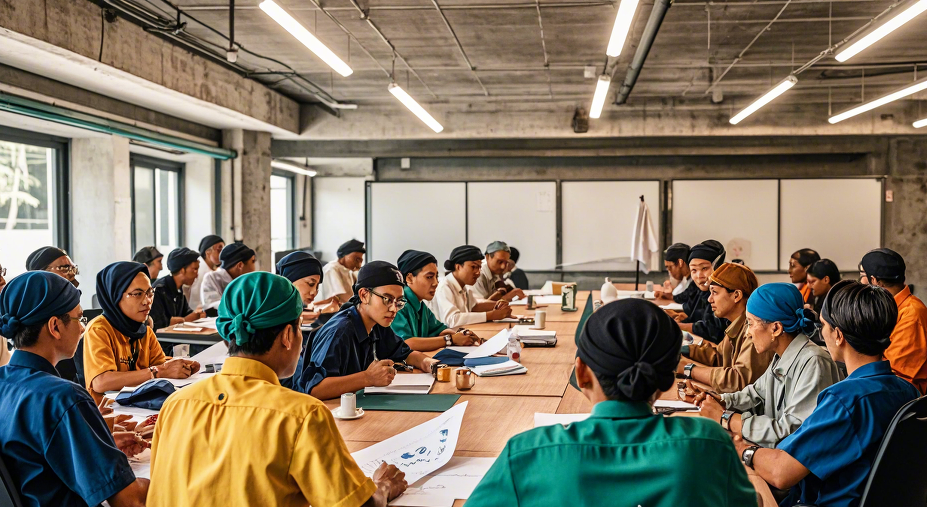
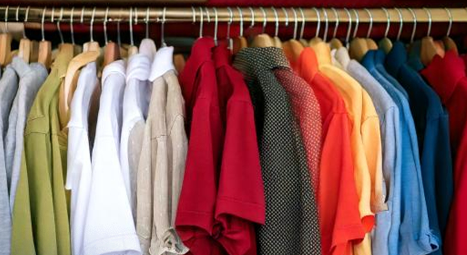
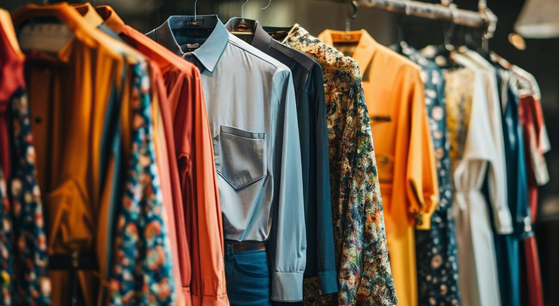

Kami adalah perusahaan garmen yang berdedikasi untuk memberikan kualitas dan inovasi di setiap produk yang kami buat. Dengan tim profesional, kami melayani berbagai klien dari berbagai industri.
Kami adalah perusahaan garmen yang berdedikasi untuk memberikan kualitas dan inovasi di setiap produk yang kami buat. Dengan tim profesional, kami melayani berbagai klien dari berbagai industri.
CV. BARUMARTA, perusahaan garmen yang baru hadir di industri garmen. Kami dengan bangga menawarkan beragam produk berkualitas tinggi, mulai dari pakaian kasual hingga busana formal, yang dirancang untuk memenuhi kebutuhan dan preferensi pelanggan kami. Didirikan oleh tim profesional yang berpengalaman di bidang garmen, CV. BARUMARTA bertujuan untuk menjadi jembatan antara produsen dan konsumen dengan menghadirkan koleksi terbaru yang tidak hanya trendi, tetapi juga nyaman dan terjangkau.
Kami percaya bahwa setiap individu memiliki gaya unik dan oleh karena itu kami menyediakan berbagai pilihan yang dapat disesuaikan dengan selera masing-masing. Dengan komitmen kami terhadap kualitas, inovasi, dan layanan pelanggan yang unggul, kami berusaha untuk menciptakan pengalaman yang menyenangkan dan memuaskan. Di CV. BARUMARTA, kami tidak hanya menjual produk, tetapi juga menjalin hubungan yang erat dengan pelanggan kami, memastikan bahwa setiap pembelian menjadi langkah menuju gaya hidup yang lebih baik.
Kami mengundang Anda untuk menjelajahi koleksi kami dan menemukan inspirasi baru dalam dunia fashion. Terima kasih telah memilih CV. BARUMARATA sebagai mitra garmen Anda!



Kami selalu menempatkan kualitas sebagai prioritas utama dalam setiap produk yang kami buat, menggunakan bahan terbaik dan proses kontrol kualitas yang ketat.
Kami terus berinovasi, baik dalam teknologi produksi maupun desain, untuk memastikan produk kami selalu mengikuti tren dan kebutuhan pasar.
Kami berkomitmen pada praktik bisnis yang berkelanjutan dan ramah lingkungan, dengan fokus pada pengurangan limbah dan penggunaan bahan yang lebih eco-friendly.
Kepuasan pelanggan adalah tujuan utama kami, dan kami selalu berusaha memberikan pelayanan terbaik dan solusi garmen yang tepat bagi setiap klien.
Menjadi inspirasi dalam industri garmen dengan inovasi produk berkualitas yang mendukung gaya hidup modern dan ramah lingkungan.